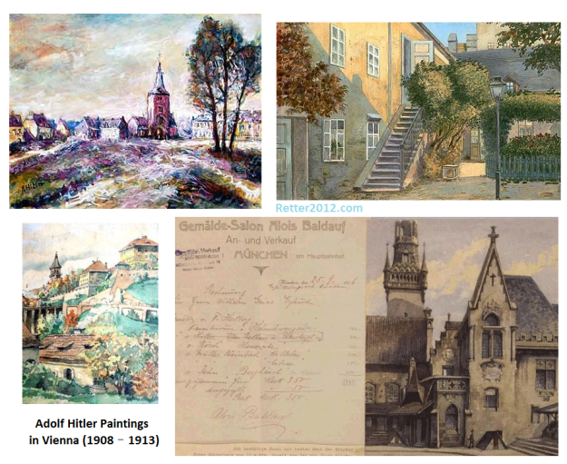

返回主页
Adolf Hitler Paintings in Vienna (1908�C1913)

Young Hitler was a failed artist before he turned to a darker course.
"His daily activity was to go out and paint - he was penniless," he said.
"He tried to get into an academy in Vienna to pursue a career as a professional artist but had two applications turned down.
"He simply wasn't good enough, particularly when drawing people the perspective was all wrong."
If he'd been given a place in the academy the most we'd ever heard of Adolf Hitler would have been that he was a routine artist painting some nice landscapes, Roban siad.
"Researchers believe because he was rejected, it could have turned his mind into deep resentment and eventually into monster he became."
## If you judge people, you have no time to love them. Teresa
version:1.0; jobnet@188.com © retter2012.com